Manual de usuario
Todo lo que necesitas saber para sacar el máximo partido a Taxi Driver Control, paso a paso.
01 — Acceso y registro
El primer paso es crear tu cuenta. Solo necesitas nombre, email y contraseña.
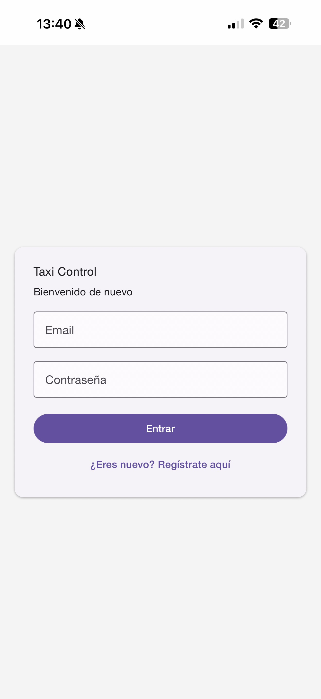
Al abrir la app por primera vez verás la pantalla de login. Si ya tienes cuenta introduce tu email y contraseña y pulsa Entrar.
Si es tu primera vez pulsa ¿Eres nuevo? Regístrate aquí.
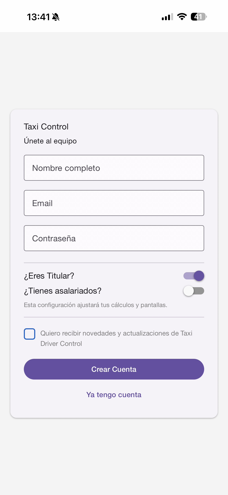
Rellena tu nombre completo, email y contraseña. Luego indica tu rol:
Esta configuración determina qué pantallas y cálculos verás. Puedes cambiarla después en Ajustes.
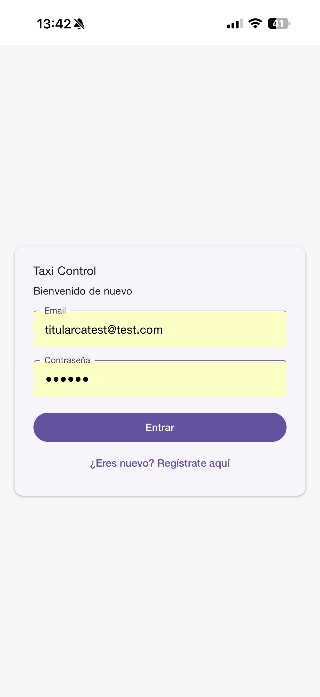
Introduce tu email y contraseña. La app recuerda tu sesión — no necesitarás volver a introducirlos salvo que cierres sesión manualmente.
Tu sesión se mantiene activa aunque cierres la app o el teléfono se quede sin batería.
03 — Servicios
La pantalla principal de la app. Aquí añades cada servicio según lo vas haciendo durante el turno.
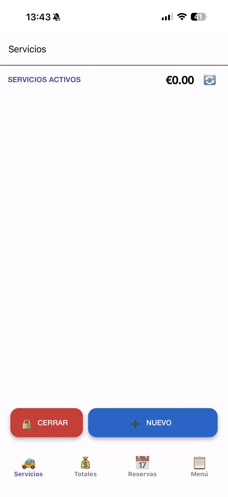
Cuando abres un turno nuevo la lista aparece vacía y el contador marca €0.00. Pulsa + NUEVO para añadir tu primer servicio.
El botón CERRAR (rojo) cierra el turno al final del día. No lo pulses hasta terminar.
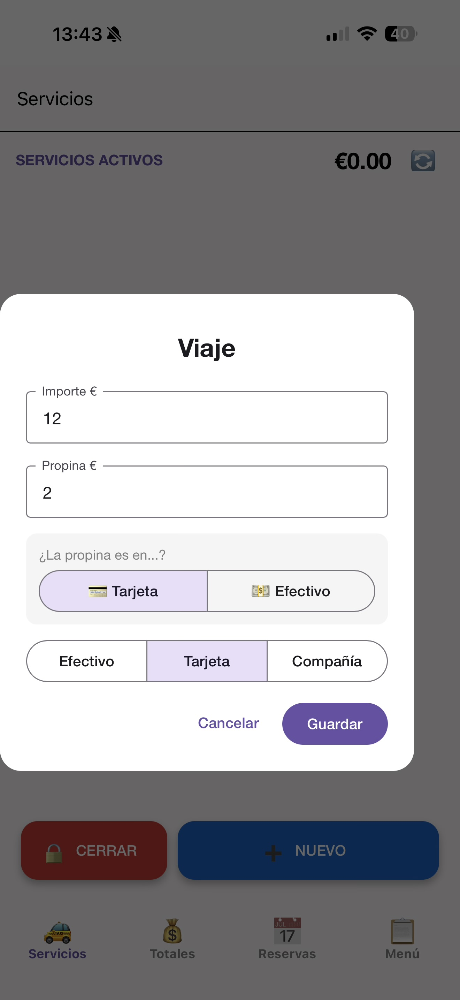
Al pulsar + NUEVO aparece el formulario de viaje. Introduce:
Si hay propina indica si es en tarjeta o efectivo. Pulsa Guardar.
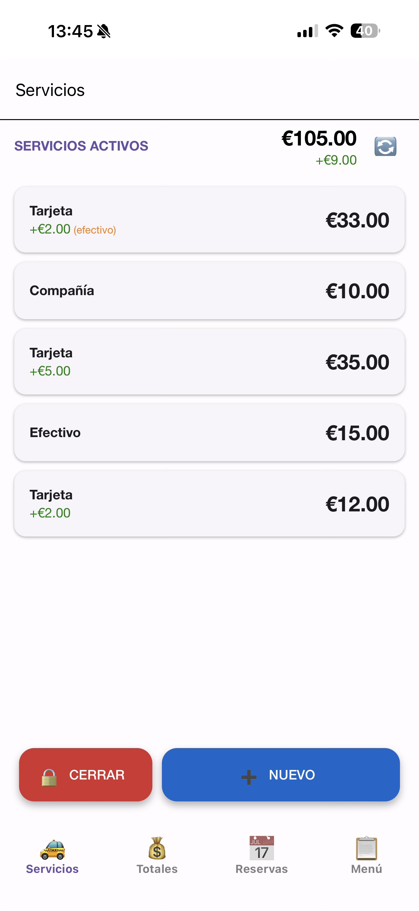
Cada servicio aparece en la lista con su método de pago e importe. El contador superior muestra el total acumulado en tiempo real.
04 — Cerrar turno
Al acabar la jornada cierra el turno indicando los kilómetros recorridos y los gastos del día.
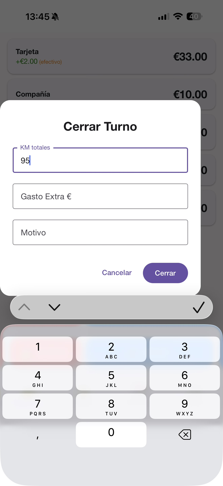
Al pulsar CERRAR aparece el formulario de cierre. Introduce:
Pulsa Cerrar para confirmar. Los datos se guardan y se calculan los totales automáticamente.
05 — Totales
La pantalla de Totales calcula automáticamente tu beneficio neto, el control del datáfono y las compañías pendientes.
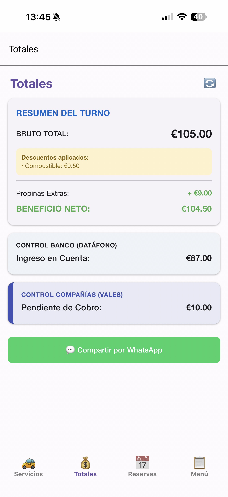
Si eres asalariado verás además la Liquidación de Caja con tu parte y la del titular.
06 — Compartir por WhatsApp
Desde Totales puedes enviar el resumen completo del turno por WhatsApp al titular o a quien necesites.
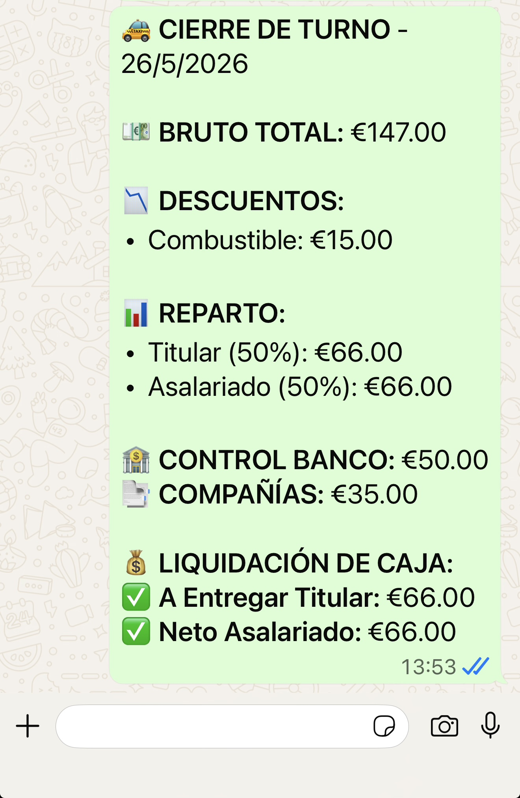
Pulsa el botón verde Compartir por WhatsApp. Se genera automáticamente un mensaje con:
El mensaje se abre directamente en WhatsApp. Solo tienes que elegir el contacto y enviarlo.
07 — Reservas
Añade reservas con antelación y recibe una notificación 30 minutos antes de cada recogida.
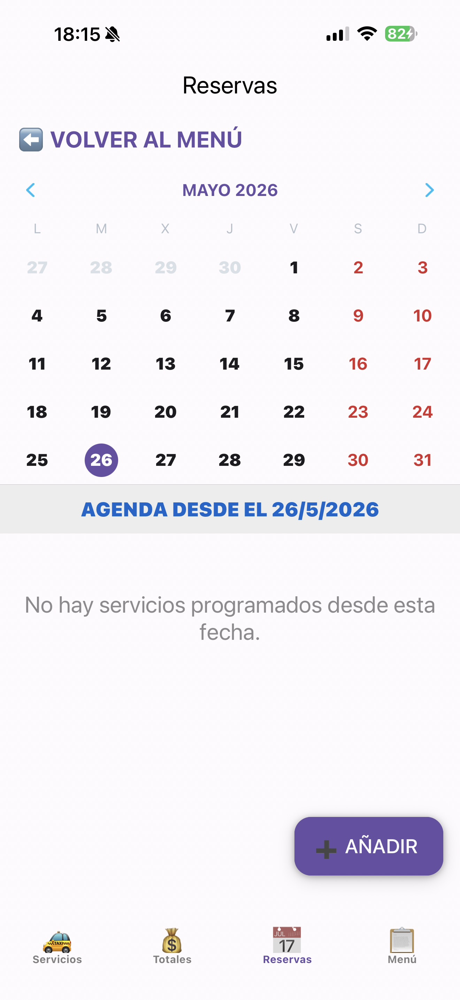
El calendario muestra todos los meses. Los días con reservas aparecen marcados con un punto azul. Los fines de semana y festivos aparecen en rojo.
Pulsa sobre cualquier día para ver las reservas desde esa fecha. Pulsa + AÑADIR para crear una nueva.
La agenda muestra todos los servicios programados desde la fecha seleccionada hacia adelante.
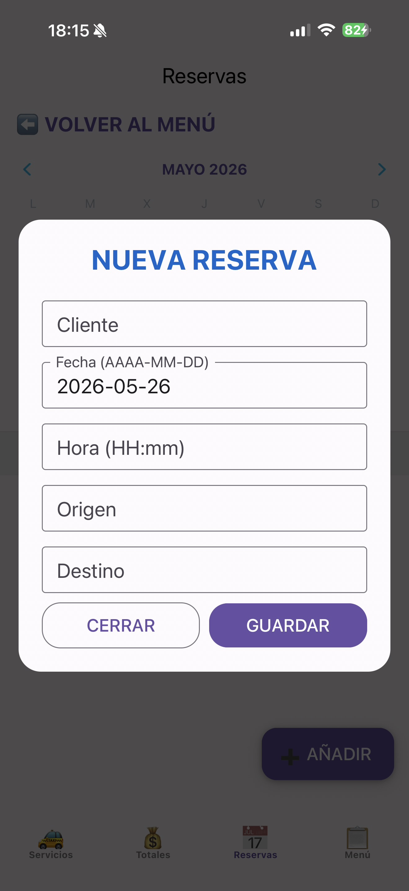
Rellena todos los campos:
La app te enviará una notificación push 30 minutos antes de la hora de recogida.
08 — Mi Mes
Consulta todos tus turnos del mes y exporta un informe en PDF o Excel.
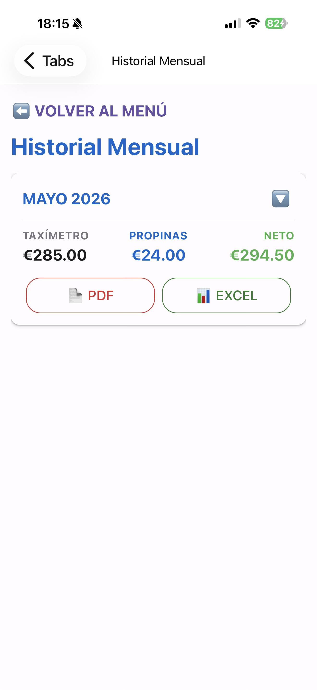
Muestra el resumen del mes actual con el total del taxímetro, propinas y beneficio neto. Usa el selector para cambiar de mes.
Los informes PDF incluyen el desglose completo de cada turno con fechas, importes y liquidación.
09 — Mi Año
Un resumen completo de todo el año con el beneficio neto total, kilómetros y combustible.
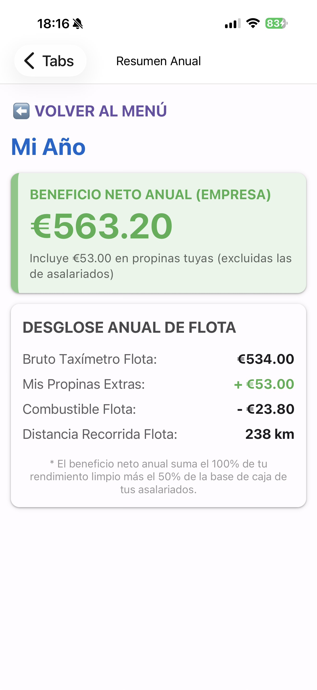
Muestra el beneficio neto anual total incluyendo:
Para titulares con asalariados el beneficio neto incluye el 100% del rendimiento propio más el 50% de la base de caja de los asalariados.
10 — Mantenimiento
Lleva un registro completo de todas las intervenciones del vehículo con fechas, kilómetros y próximas revisiones.
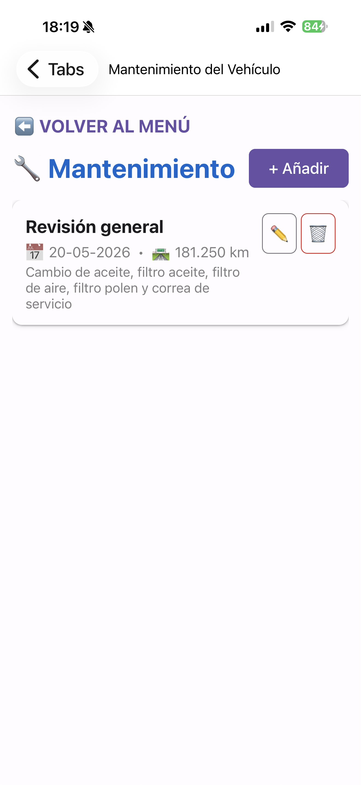
Cada registro muestra el tipo de trabajo, la fecha y los kilómetros en el momento de la intervención. Si hay una próxima revisión programada aparece en verde.
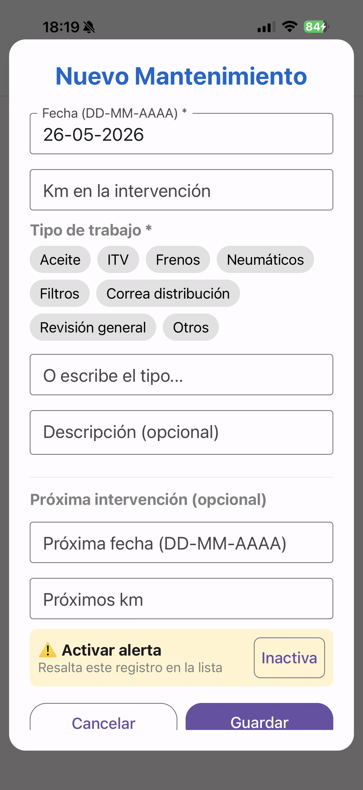
Pulsa + Añadir y rellena los datos:
11 — Ajustes
Personaliza los cálculos y el comportamiento de la app según tu situación.
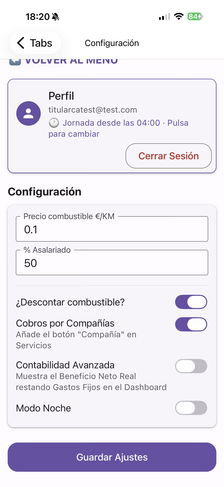
Pulsa en Jornada desde las... para cambiar la hora de inicio del turno. Por defecto es las 04:00 de la madrugada.
12 — Solo para titulares
Funciones exclusivas para titulares con asalariados a su cargo.
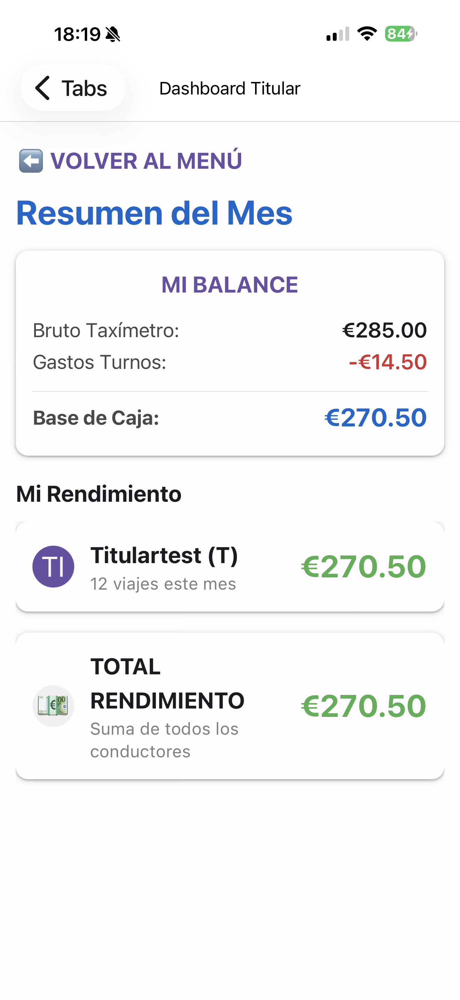
El Dashboard muestra el resumen mensual de toda la flota:
Pulsa sobre cualquier conductor para ver su auditoría detallada turno por turno con opción de exportar en PDF o Excel.
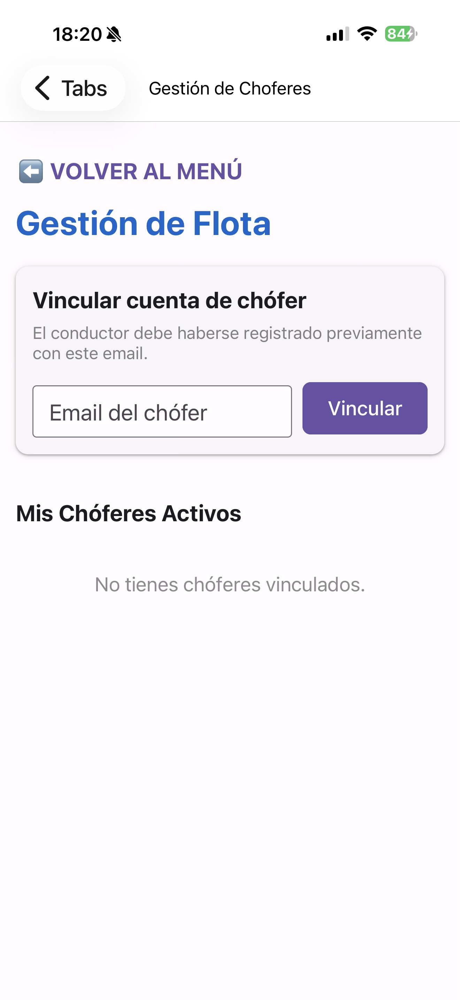
Desde Mis Choferes puedes vincular a tus conductores asalariados:
Una vez vinculado el conductor podrá ver sus propios datos y tú tendrás acceso a la auditoría completa de su actividad.